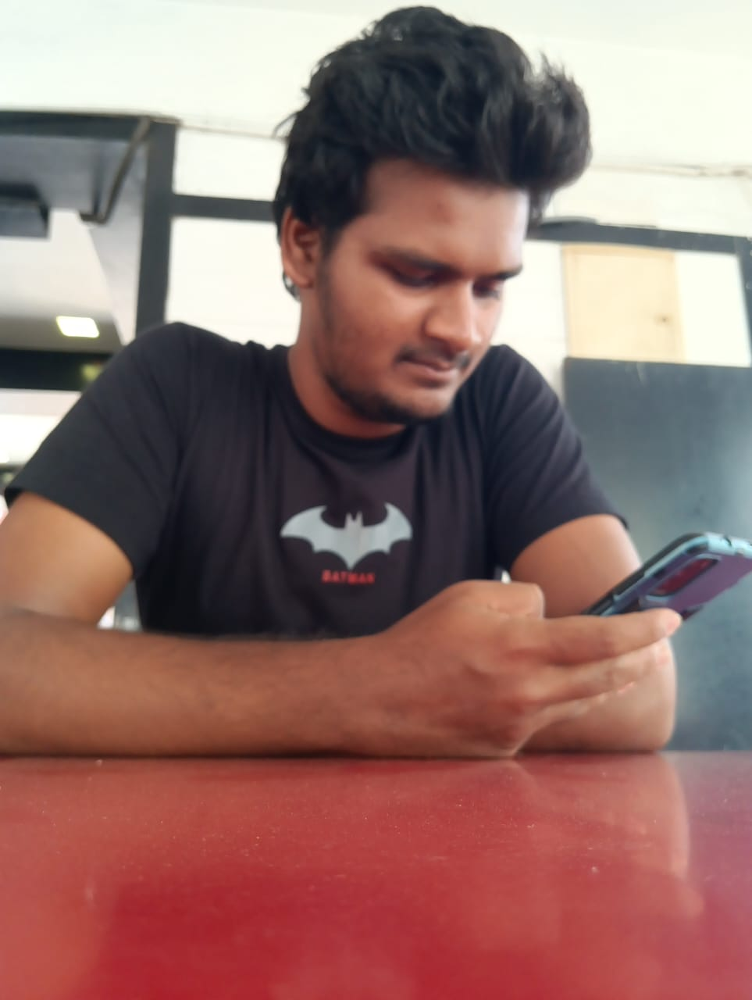

Hi There, I am Shiva
I am a developer with a proficiency in web development and good at problem solving and workflow methods
I am a developer with a proficiency in web development and good at problem solving and workflow methods
I am a passionate and dedicated professional with strong skills in problem-solving and web development. I thrive on tackling complex challenges and continuously improving my coding abilities through regular practice. My expertise lies in creating efficient and innovative solutions, ensuring high-quality web applications.
These are technical skills that I have acquired thus far in my computer science career. I am not claiming to be a master in all of these skills, that would be amazing, but it is simply not true. With that said, I am confident that I can hold a position that utilizes any of the following competencies and increase my mastery in any of these skills if needed.
C, C++, Java,JavaScript, MySQL, HTML, CSS, JSON, Php, NodeJs
Test-Driven-Development, Clean Code, Useful Comments, Ability to adhere to ISO and other standards
GitHub, Presentation Skills, Team Leadership/Management, Cross-Team Communication, Great Sense of Humor
Software Engineering, Software Development, Website Development, Machine Learning
Data Structures, Web development Concepts,Php to mysql
Windows, JSON, Anaconda, GPT, VSCode, Canva, Web design/p>
->About my journey of the IETE Website Redesign project.
->Amongst four hundred enthusiastic participants, we are proud to have been shortlisted and progressed to the final round of this prestigious competition.
->While we didn't clinch the ultimate victory, we are filled with pride and gratitude for the opportunity to showcase our skills and passion for web design.
About my journey of the Portfolio Website project. This project allowed me to explore and implement modern web development practices, showcasing my technical skills in HTML, CSS, and JavaScript.
The website is a digital representation of my professional profile, featuring an elegant design, responsive layout, and interactive elements.
->The Heart Risk Detection project is an innovative application of machine learning and wearable technology to address critical health concerns.
->This project uses datas like heart rate,bp and O2 from your smart watch or Google fit and perform analysis . If a potential risk is detected, an instant alert is sent to pre-specified emergency contacts via Message, enabling timely intervention.
->This project is currently developed and tested locally as it requires a larger user base for extensive testing. It represents a small-scale proof-of-concept idea with potential for future scaling.
This project is about the automation in the industry how to easily transport the materials or heavy materials this project showcases the simplest idea for it. which uses arduino sensors to automate it additionally it has ultrasonic sensor which will identify if any object is in front to avoid the obstacle collision